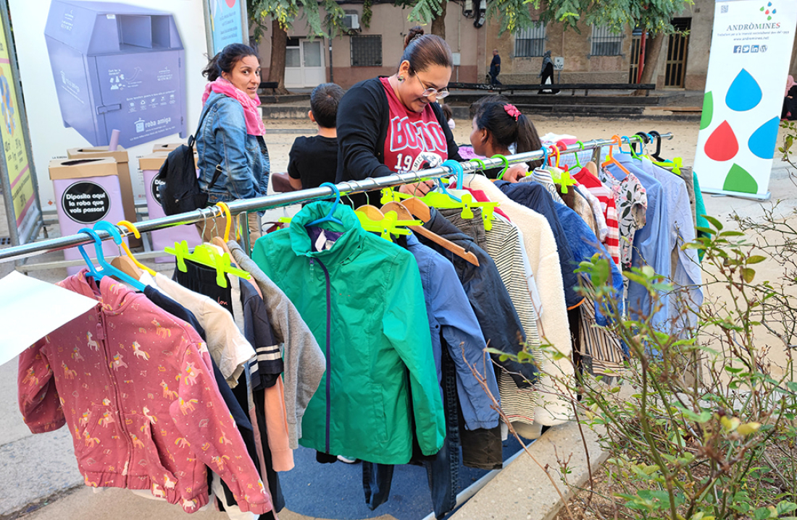

Ayuntamiento de Montcada i Reixac
Ayuntamiento de Montcada i Reixac
Consejos para Empresas y Habitantes
Ayuntamiento de Montcada i ReixacConsejos para Empresas y Habitantes
La sostenibilidad es una responsabilidad compartida entre empresas, ciudadanía e instituciones públicas. A continuación se presentan medidas prácticas que pueden aplicarse a nivel local.
ASG (Ambiental, Social y Gobernanza): Este concepto evalúa el impacto ambiental de la empresa, su responsabilidad social y la transparencia en la gestión. Integrar criterios ASG mejora la competitividad y la sostenibilidad a largo plazo.
Diseño y producción sostenibles: Aplicar principios de economía circular, ecodiseño y reciclaje permite reducir residuos, reutilizar materiales y optimizar el consumo de energía en los procesos productivos.
Certificaciones sostenibles: Normas como ISO 14001, el reglamento EMAS o certificaciones como Fair Trade garantizan una gestión ambiental adecuada y prácticas responsables.
Contribución a los ODS: Los Objetivos de Desarrollo Sostenible buscan proteger el planeta y mejorar la calidad de vida. Acciones como ahorrar agua, separar residuos y consumir productos locales ayudan a alcanzar estos objetivos.
Reducción de la huella de carbono: Utilizar transporte público, desplazarse en bicicleta, reducir el uso de plásticos y practicar el compostaje doméstico disminuye el impacto ambiental individual.
Programas municipales: El Ayuntamiento ofrece subvenciones para mejorar la eficiencia energética, puntos de recogida selectiva y talleres formativos para promover hábitos sostenibles.
